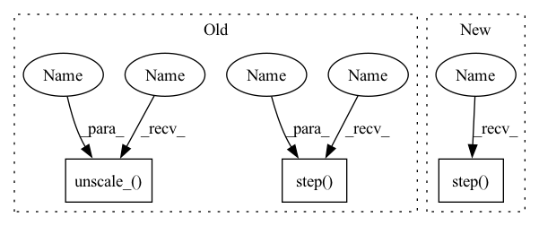

Pattern ID :12266

Before Change
grad_scaler.unscale_(optimizer)
if step_counter > postnet_start_steps:
grad_scaler_postflow.scale(glow_loss).backward()
grad_scaler_postflow.unscale_(optimizer_postflow)
torch.nn.utils.clip_grad_norm_(net.parameters(), 1.0, error_if_nonfinite=False)
grad_scaler.step(optimizer)
grad_scaler.update()
if step_counter > postnet_start_steps:
grad_scaler_postflow.step(optimizer_postflow)
grad_scaler_postflow.update()
scheduler.step()
if step_counter > postnet_start_steps:
After Change
torch.nn.utils.clip_grad_norm_(net.parameters(), 1.0, error_if_nonfinite=False)
grad_scaler.step(optimizer)
optimizer_postflow.step()
grad_scaler.update()
scheduler.step()
In pattern: SUPERPATTERN
Frequency: 3
Non-data size: 3
Instances
Fragment ID: 41613498
Project Name: digitalphonetics/ims-toucan
Commit Name: f602045d362a5da3119066ffc47b09771ed11b7e
Time: 2023-02-05
Author: lux.florian@gmail.com
File Name: TrainingInterfaces/Text_to_Spectrogram/PortaSpeech/portaspeech_train_loop.py
M Class Name: AnonimousClass
N Class Name: AnonimousClass
M Method Name: train_loop(16)
N Method Name: train_loop(16)
M Parent Class:
N Parent Class:
M File Name: TrainingInterfaces/Text_to_Spectrogram/PortaSpeech/portaspeech_train_loop.py
N File Name: TrainingInterfaces/Text_to_Spectrogram/PortaSpeech/portaspeech_train_loop.py
M Start Line: 88
M End Line: 232
N Start Line: 88
N End Line: 219
'>
Before Change
index = unet_number - 1
unet = self.decoder.unets[index]
optimizer = getattr(self, f"optim{index}")
scaler = getattr(self, f"scaler{index}")
if exists(self.max_grad_norm):
scaler.unscale_(optimizer)
nn.utils.clip_grad_norm_(unet.parameters(), self.max_grad_norm)
scaler.step(optimizer)
scaler.update()
optimizer.zero_grad()
if self.use_ema:
After Change
assert exists(unet_number) and 1 <= unet_number <= self.num_unets
index = unet_number - 1
optimizer = getattr(self, f"optim{index}")
if exists(self.max_grad_norm):
self.accelerator.clip_grad_norm_(self.decoder.parameters(), self.max_grad_norm) // Automatically unscales gradients
optimizer.step()
optimizer.zero_grad()
if self.use_ema:
ema_unet = self.ema_unets[index]
'>
Fragment ID: 41613496
Project Name: lucidrains/dalle2-pytorch
Commit Name: 58892135d9bcf117921c885dda161c0b67452096
Time: 2022-06-19
Author: aidan.dempster@gmail.com
File Name: dalle2_pytorch/trainer.py
M Class Name: DecoderTrainer
N Class Name: DecoderTrainer
M Method Name: update(2)
N Method Name: update(2)
M Parent Class: nn.Module
N Parent Class: nn.Module
M File Name: dalle2_pytorch/trainer.py
N File Name: dalle2_pytorch/trainer.py
M Start Line: 697
M End Line: 708
N Start Line: 693
N End Line: 697
'>
Before Change
collate_fn=collate_and_pad,
persistent_workers=True)
step_counter = 0
optimizer = torch.optim.Adam(net.parameters(), lr=lr)
scheduler = WarmupScheduler(optimizer, peak_lr=lr, warmup_steps=warmup_steps,
max_steps=phase_1_steps + phase_2_steps)
grad_scaler = GradScaler()
epoch = 0
if resume:
path_to_checkpoint = get_most_recent_checkpoint(checkpoint_dir=save_directory)
if path_to_checkpoint is not None:
check_dict = torch.load(path_to_checkpoint, map_location=device)
net.load_state_dict(check_dict["model"])
if not fine_tune:
optimizer.load_state_dict(check_dict["optimizer"])
scheduler.load_state_dict(check_dict["scheduler"])
step_counter = check_dict["step_counter"]
grad_scaler.load_state_dict(check_dict["scaler"])
start_time = time.time()
while True:
net.train()
epoch += 1
optimizer.zero_grad()
train_losses_this_epoch = list()
cycle_losses_this_epoch = list()
l1_losses_total = list()
duration_losses_discr_total = list()
pitch_losses_discr_total = list()
energy_losses_discr_total = list()
duration_losses_adv_total = list()
pitch_losses_adv_total = list()
energy_losses_adv_total = list()
glow_losses_total = list()
for batch in tqdm(train_loader):
train_loss = 0.0
with autocast():
if step_counter <= phase_1_steps:
// ===============================================
// = PHASE 1: no cycle objective =
// ===============================================
style_embedding = style_embedding_function(batch_of_spectrograms=batch[2].to(device),
batch_of_spectrogram_lengths=batch[3].to(device))
for _ in range(100):
pitch_critic_loss, energy_critic_loss, duration_critic_loss = net.calculate_discriminator_loss(
text_tensors=batch[0].to(device),
text_lens=batch[1].to(device),
gold_durations=batch[4].to(device),
gold_pitch=batch[6].to(device), // mind the switched order
gold_energy=batch[5].to(device), // mind the switched order
utterance_embedding=style_embedding,
lang_ids=batch[8].to(device),
)
loss = pitch_critic_loss + energy_critic_loss + duration_critic_loss
if use_wandb:
wandb.log({
"pitch_critic_loss" : pitch_critic_loss.item(),
"energy_critic_loss" : energy_critic_loss.item(),
"duration_critic_loss": duration_critic_loss.item(),
})
optimizer.zero_grad()
grad_scaler.scale(loss).backward()
grad_scaler.unscale_(optimizer)
torch.nn.utils.clip_grad_norm_(net.parameters(), 1.0, error_if_nonfinite=False)
grad_scaler.step(optimizer)
l1_loss, duration_losses, pitch_losses, energy_losses, glow_loss, kl_loss = net(
text_tensors=batch[0].to(device),
text_lengths=batch[1].to(device),
After Change
collate_fn=collate_and_pad,
persistent_workers=True)
step_counter = 0
optimizer = torch.optim.Adam(net.parameters(), lr=lr)
scheduler = WarmupScheduler(optimizer, peak_lr=lr, warmup_steps=warmup_steps,
max_steps=phase_1_steps + phase_2_steps)
grad_scaler = GradScaler()
epoch = 0
if resume:
path_to_checkpoint = get_most_recent_checkpoint(checkpoint_dir=save_directory)
if path_to_checkpoint is not None:
check_dict = torch.load(path_to_checkpoint, map_location=device)
net.load_state_dict(check_dict["model"])
if not fine_tune:
optimizer.load_state_dict(check_dict["optimizer"])
scheduler.load_state_dict(check_dict["scheduler"])
step_counter = check_dict["step_counter"]
grad_scaler.load_state_dict(check_dict["scaler"])
start_time = time.time()
while True:
net.train()
epoch += 1
optimizer.zero_grad()
train_losses_this_epoch = list()
cycle_losses_this_epoch = list()
l1_losses_total = list()
duration_losses_discr_total = list()
pitch_losses_discr_total = list()
energy_losses_discr_total = list()
duration_losses_adv_total = list()
pitch_losses_adv_total = list()
energy_losses_adv_total = list()
glow_losses_total = list()
for batch in tqdm(train_loader):
style_embedding = style_embedding_function(batch_of_spectrograms=batch[2].to(device),
batch_of_spectrogram_lengths=batch[3].to(device))
for _ in range(100):
pitch_critic_loss, energy_critic_loss, duration_critic_loss = net.calculate_discriminator_loss(
text_tensors=batch[0].to(device),
text_lens=batch[1].to(device),
gold_durations=batch[4].to(device),
gold_pitch=batch[6].to(device), // mind the switched order
gold_energy=batch[5].to(device), // mind the switched order
utterance_embedding=style_embedding,
lang_ids=batch[8].to(device),
)
loss = pitch_critic_loss + energy_critic_loss + duration_critic_loss
if use_wandb:
wandb.log({
"pitch_critic_loss" : pitch_critic_loss.item(),
"energy_critic_loss" : energy_critic_loss.item(),
"duration_critic_loss": duration_critic_loss.item(),
})
optimizer.zero_grad()
loss.backward()
torch.nn.utils.clip_grad_norm_(net.parameters(), 1.0, error_if_nonfinite=False)
optimizer.step()
train_loss = 0.0
with autocast():
if step_counter <= phase_1_steps:
// ===============================================
'>
Fragment ID: 41613497
Project Name: digitalphonetics/ims-toucan
Commit Name: 96bb0b4beccd98dc9c762b915a8508508d645b1a
Time: 2023-03-02
Author: lux.florian@gmail.com
File Name: TrainingInterfaces/Text_to_Spectrogram/ToucanTTS/toucantts_train_loop.py
M Class Name: AnonimousClass
N Class Name: AnonimousClass
M Method Name: train_loop(15)
N Method Name: train_loop(15)
M Parent Class:
N Parent Class:
M File Name: TrainingInterfaces/Text_to_Spectrogram/ToucanTTS/toucantts_train_loop.py
N File Name: TrainingInterfaces/Text_to_Spectrogram/ToucanTTS/toucantts_train_loop.py
M Start Line: 89
M End Line: 153
N Start Line: 89
N End Line: 143